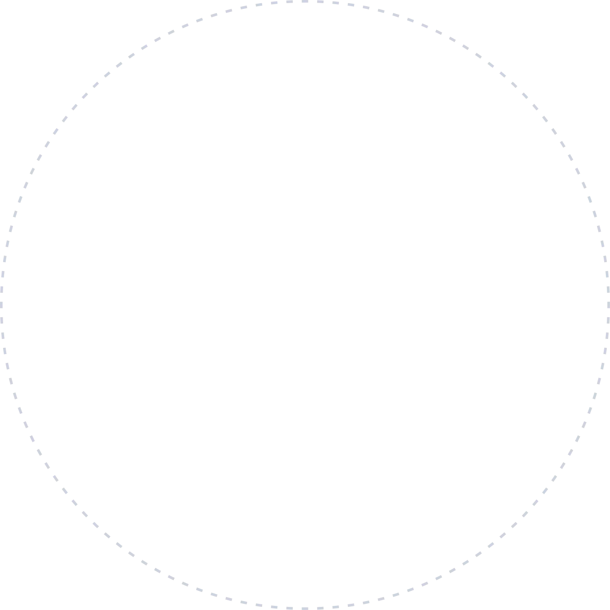
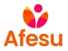

Seu chamado vira fila
Alguém abre o ticket, ninguém resolve. Na semana seguinte o mesmo problema volta, do mesmo jeito.
Serviços de TI · Suporte · Monitoramento 24/7
A MKNod é o parceiro que simplifica e reduz o custo da sua operação de TI — com automação no repetitivo, IA para acelerar o diagnóstico e atendimento humano especializado quando o problema é grande.
Preencha e devolvemos um retrato do que precisa de atenção agora.
Se você reconheceu dois ou mais, o problema não é o técnico. É o modelo.
Alguém abre o ticket, ninguém resolve. Na semana seguinte o mesmo problema volta, do mesmo jeito.
Quando seu técnico tira férias ou pede demissão, o conhecimento da sua rede vai embora com ele.
O disco lotou, o certificado venceu, o backup parou há três semanas. Você descobre quando para.
Hora técnica avulsa, emergência de sábado, projeto que estourou. Nenhum mês parece com o outro.
Reconheceu a sua empresa aí?
Quero resolver issoTrês coisas que raramente aparecem juntas em um fornecedor de PME.
Reset de senha, liberação de acesso, atualização de estação e conta de colaborador rodam sozinhos. O tempo do técnico sobra para o que trava a sua operação.
Cruza alertas, agrupa chamados parecidos e aponta a causa provável antes de alguém abrir o equipamento. E, quando a sua empresa adota IA e automações, a gente cuida para que isso não abra brecha de acesso ou de dado.
N1, N2 e N3 com nome e rosto. Você fala com quem resolve — não com número de protocolo nem com robô fingindo ser analista.
O resultado é uma TI mais simples de operar e uma conta que você consegue prever no início do mês.
Quero uma conta previsívelLevantamos equipamentos, servidores, licenças, acessos e riscos, e devolvemos um documento com o que precisa de atenção agora e o que pode esperar.
Instalamos o monitoramento, abrimos o portal para o seu time, documentamos o ambiente e resolvemos a fila de problemas que já estava parada.
Atendemos os chamados, acompanhamos os alertas, aplicamos atualizações e revisamos o plano com você a cada ciclo.

Depois do diagnóstico inicial, a operação segue um ciclo contínuo, sempre priorizado pelo que tem mais impacto no seu negócio.
Transparência de escopo evita surpresa nos dois lados.
Quer saber o que entraria no plano da sua empresa?
Pedir escopo e propostaHá 22 anos ajudando empresas de São Paulo a identificar vulnerabilidades, reduzir riscos e manter a operação digital funcionando — protegendo dados, rotina e reputação.
A VPN oferecida pela MKNod nos possibilitou a rápida implantação de uma infraestrutura de acesso remoto a 200 colaboradores em tempo recorde.

A MKNod cobra mensalidade previsível, sem cobrança por chamado. O valor é dimensionado por número de usuários, quantidade de equipamentos e nível de atendimento contratado: quanto do N2 e do N3 entra no escopo, se há monitoramento contínuo, se há atendimento presencial. Não trabalhamos com tabela fechada porque um escritório de 15 pessoas e uma operação de 200 não têm o mesmo cenário. O valor final sai no diagnóstico, junto com o escopo detalhado.
Depende do tamanho da empresa. Abaixo de 50 usuários, manter um especialista sênior interno costuma sair caro e subutilizado: você paga por um nível de conhecimento usado poucas vezes por mês. Acima disso, o desenho mais comum é um analista interno para o dia a dia e um parceiro cobrindo N2, N3 e monitoramento contínuo. A MKNod trabalha nos dois formatos — assumindo a TI inteira ou complementando a equipe que já existe.
São três níveis de profundidade. O N1 resolve o que é rotina e responde pela maior parte dos chamados: acesso, impressora, e-mail travado, troca de senha. O N2 entra quando o problema é de configuração — servidor, rede, sistema que parou de conversar com outro. O N3 é o especialista que trata a causa do problema que volta sempre. A maior parte dos chamados morre no N1; ter os três é não ficar parado nos 25% restantes, que são os que derrubam a operação.
Sim, e é o caso mais comum. Começamos com um assessment do ambiente atual: inventário de máquinas e servidores, mapeamento da rede, levantamento de licenças, verificação dos backups e das senhas de administração. Documentamos o que encontramos — porque na maioria das empresas essa documentação não existe — e assumimos a operação por etapas, sem parar o trabalho de ninguém. A transição com o fornecedor anterior é combinada, não abrupta.
A maior parte dos chamados é resolvida remotamente, que é mais rápido para quem está esperando. Quando o problema exige presença, atendemos na Grande São Paulo — o escritório fica no Butantã. O SLA fica escrito em contrato, com prazo de primeira resposta e de solução definidos por criticidade: um servidor fora do ar não tem o mesmo prazo que uma troca de senha. O atendimento é de segunda a sexta, das 8h às 18h, e todo mês enviamos relatório de cumprimento.
Sim, dos dois lados. Usamos IA na operação para cruzar alertas, agrupar chamados parecidos e apontar a causa provável antes de alguém abrir o equipamento. E quando a sua empresa adota IA e automações, cuidamos para que isso não abra brecha: quais dados saem da empresa, quem tem acesso a qual ferramenta, o que pode ou não ser enviado para serviço externo. Automação sem controle de acesso vira porta aberta.
Ficou alguma dúvida de fora?
Perguntar para um especialistaConte o que está travando a operação. A primeira conversa não custa nada e termina com um diagnóstico do que precisa de atenção. Você só precisa que tudo isso funcione — é esse o trabalho.
Quatro campos. O resto a gente descobre na conversa.